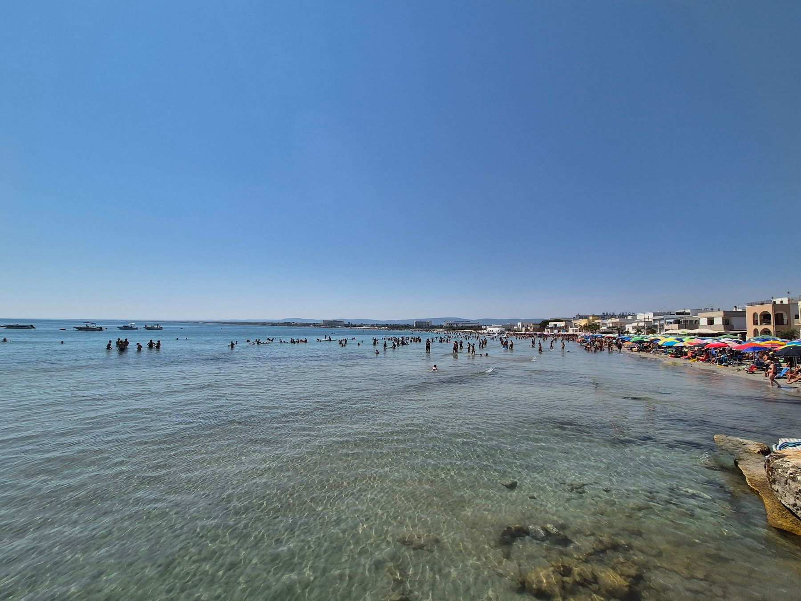
40°50′28″N 17°28′06″E — Torre Canne, Fasano
Cento metri e sei in acqua.
Casa vacanza per sei in Via del Faro 176: due camere, cucina con vista sul mare da due lati, terrazza sul tetto.
- 6 ospiti
- 2 camere
- 100 m dal mare
- 90 m dal faro
- Terrazza sul tetto
01 — La casa
Via del Faro 176
Sta sulla strada che porta al faro, a novanta metri dal faro stesso e a cento dall'acqua. Sei posti letto, due camere, e una terrazza sul tetto da cui si vedono i tetti bianchi e la linea del mare.
Ambienti curati in stile mediterraneo, con tutti i comfort. È la casa giusta per famiglie o gruppi di amici che cercano relax, natura, buona cucina e i tramonti della Puglia.
Vedi gli spazi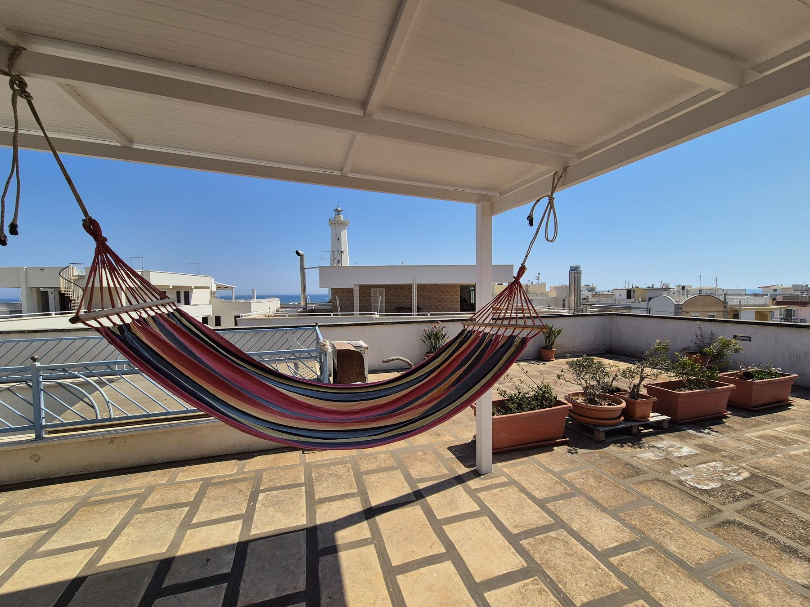
02 — Gli spazi
Gli spazi
Quattro stanze e due cieli aperti.
Il piano di sotto con la veranda all'ombra, il piano di sopra con la terrazza. In mezzo, tutto quello che serve per stare comodi in sei.
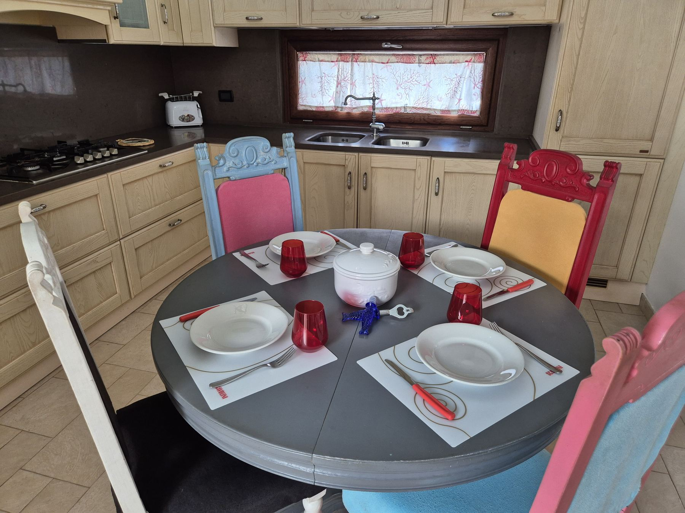
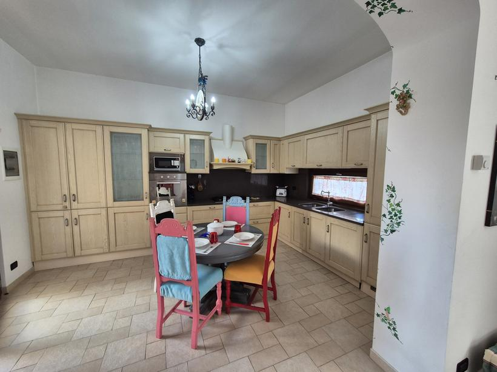
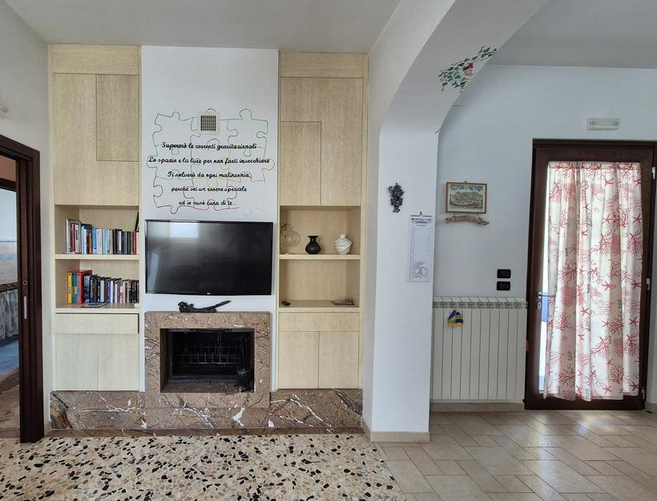
Cucina e sala
La cucina è abitabile e guarda il mare da due lati: si apparecchia, si cucina il pescato del giorno e si resta seduti a parlare. Accanto, la sala con divano, camino e televisione, per le sere in cui il vento gira.
- Tavolo 6 posti
- Cucina Forno · piano cottura · frigorifero
- Zona giorno Divano · camino · TV
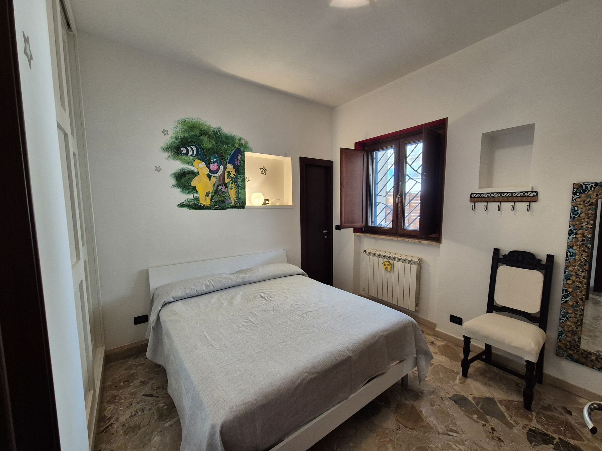
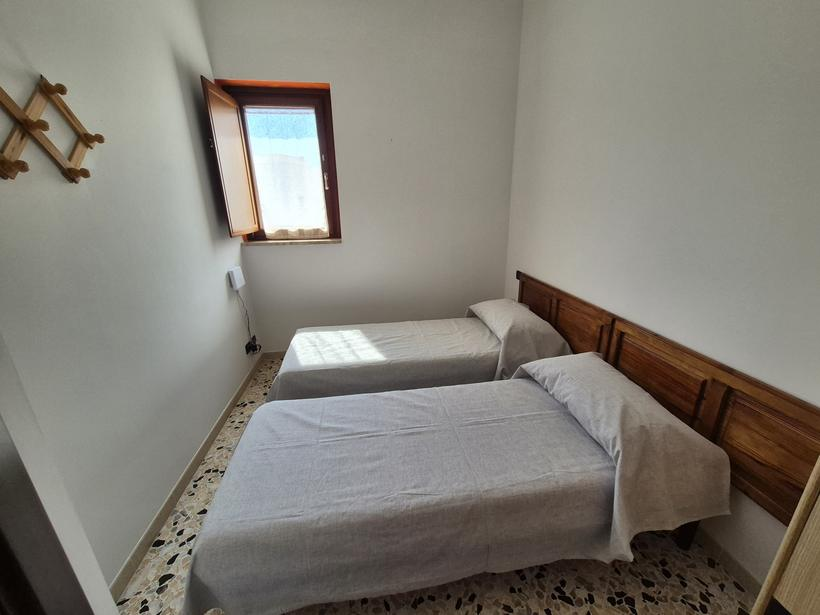
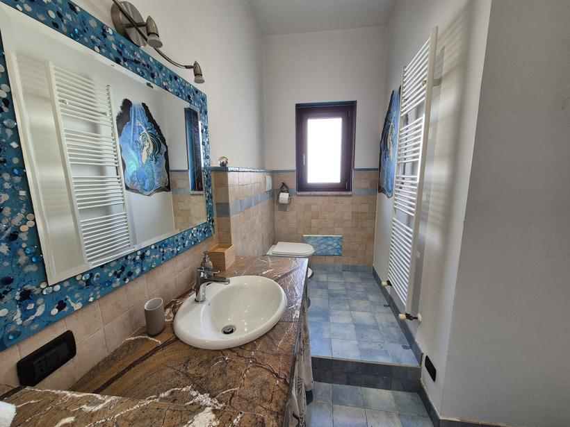
Le camere
Due camere spaziose: una matrimoniale con televisione e armadiatura, una con due letti singoli. Sei posti letto in tutto contando la zona giorno, e l'aria condizionata per le notti di agosto.
- Posti letto 6
- Camere 1 matrimoniale + 1 doppia
- Bagni Principale con doccia + servizio
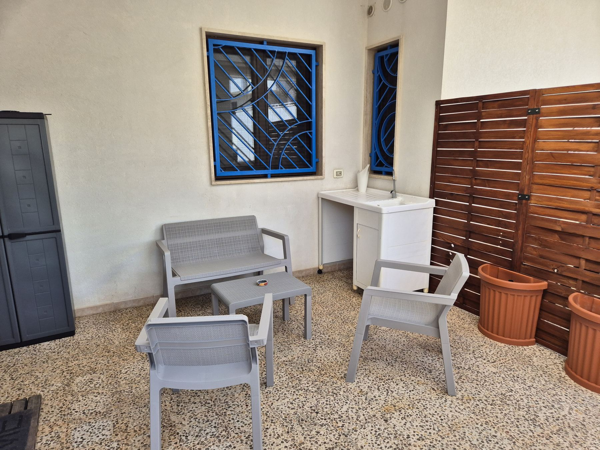
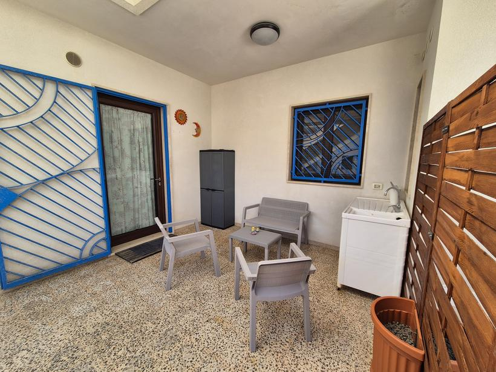
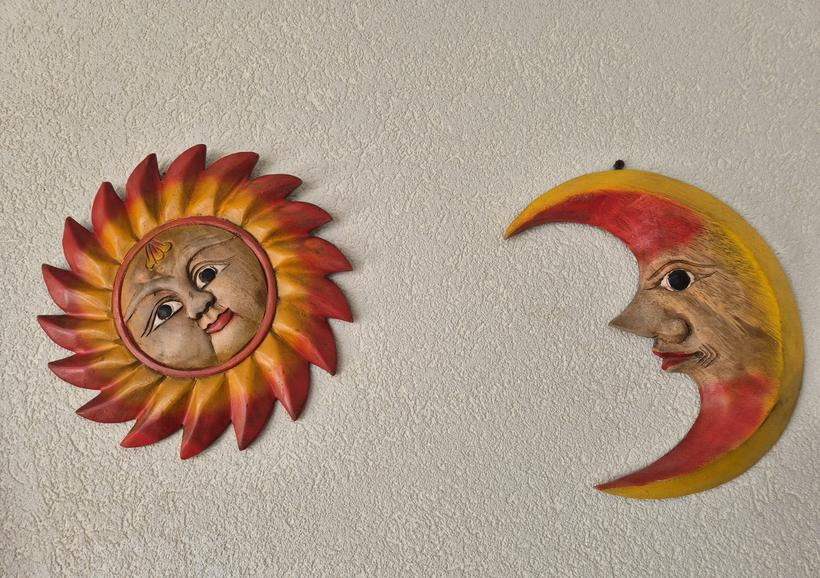
La veranda
Riparata dal sole e dal vento, con divanetto, poltrone e un tavolo. È il posto della colazione presto, del libro nelle ore calde e dei costumi stesi ad asciugare al ritorno dalla spiaggia.
- Ombra Tutto il giorno
- Ingresso Indipendente, dalla strada
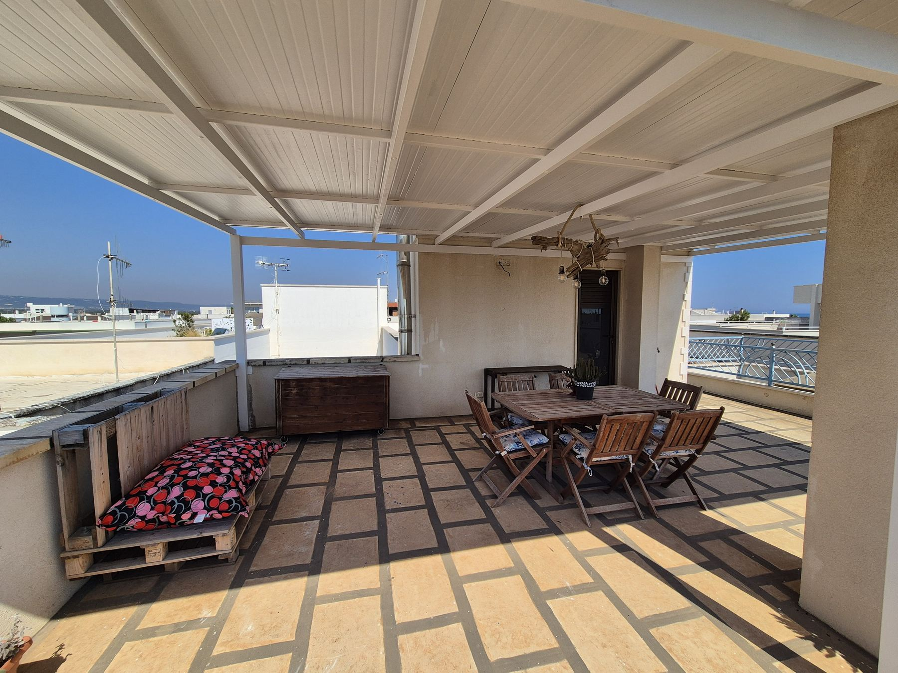
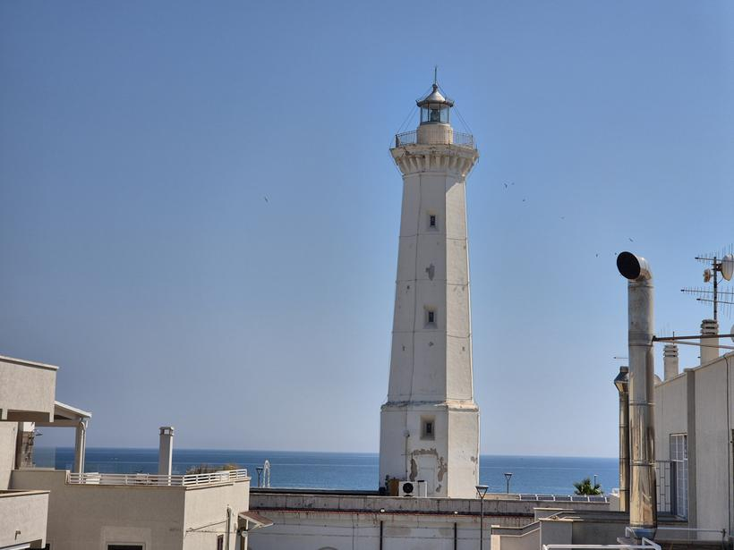
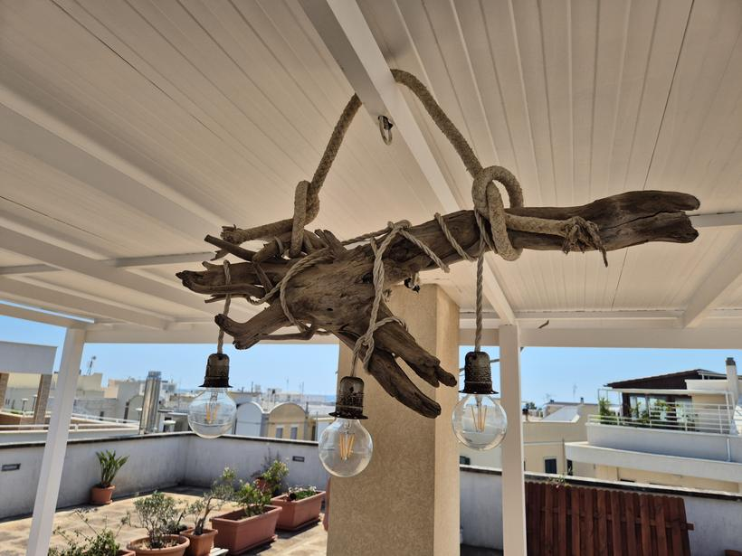
La terrazza sul tetto
È il pezzo forte. Un grande tavolo sotto la tettoia, l'amaca tesa fra due pilastri e, oltre i tetti bianchi, il faro e la linea del mare. Si cena qui quasi tutte le sere, con le lampadine appese ai legni raccolti in spiaggia.
- Tavolo all'aperto 8 posti, all'ombra
- Vista Faro e mare
- In più Amaca · piante · panca
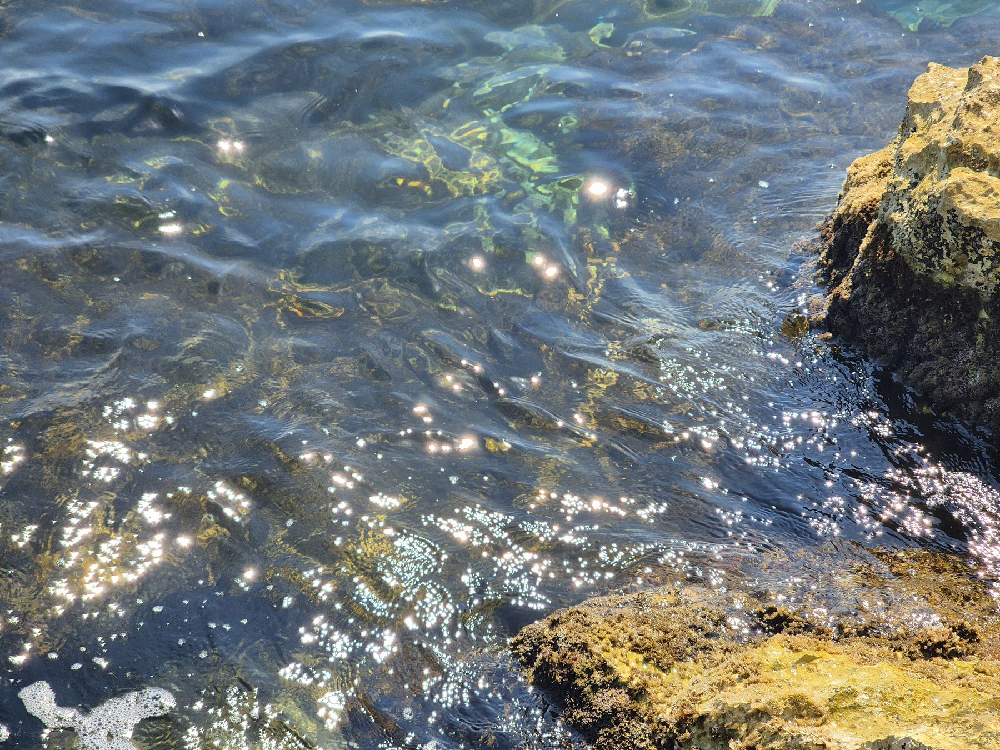
Il fondale si vede fino in fondo.
Sabbia fine e acqua che resta bassa per decine di metri: si cammina in mare, i bambini giocano tranquilli, e sugli scogli poco più in là si nuota fra i pesci.
03 — Galleria
Galleria
Ventisei fotografie, nessun ritocco.
Scattate a luglio, in una mattina qualsiasi. Clicca per ingrandire.
04 — Servizi
Servizi
Quello che trovi già in casa.
- Accesso alla spiaggiaSpiaggia libera e lidi attrezzati a pochi passi
- Aria condizionataRaffredda e controlla l'umidità
- CucinaFrigorifero, forno e piano cottura
- Zona pranzo all'apertoIl tavolo grande in terrazza
- WifiConnessione in tutta la casa
- TVIn sala e in camera matrimoniale
- Caminetto internoPer le sere fuori stagione
- Parcheggio a pagamento in locoPosto auto presso l'alloggio
- EstintoreIn posizione segnalata
- Kit di primo soccorsoSempre disponibile
- Rilevatore di monossidoInstallato e funzionante
- Biancheria e asciugamani su richiesta
- Animali: scrivici, ne parliamo
- Check-in flessibile, ci siamo noi ad accogliervi
05 — Dintorni
Dintorni
Tutto a piedi. Il resto della Puglia a mezz'ora.
Le distanze sono su scala logaritmica: ogni tacca vale dieci volte la precedente. Serve a far vedere in un colpo d'occhio quanto sta davvero vicino.
- A piedi
- In bici o in auto
- Gite in giornata
06 — Ospiti
“Proprietario gentile, alloggio in posizione centrale, ottimo ristorante al piano terra, terrazza sul tetto.”
07 — Contatti
Contatti
Scrivici per le date libere.
Rispondiamo in giornata. Facci sapere quando vorresti venire e in quante persone siete: ti mandiamo disponibilità e prezzo, senza impegno.
Dove siamo
Via del Faro 176
72015 Torre Canne (BR)
Come arrivare
- Aeroporto di Brindisi 55 km · 45 min
- Aeroporto di Bari 85 km · 1 h
- Stazione di Fasano 12 km · 18 min
- Uscita SS379 “Torre Canne” 2 km · 3 min